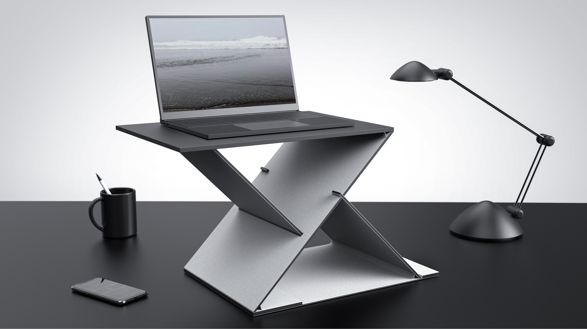
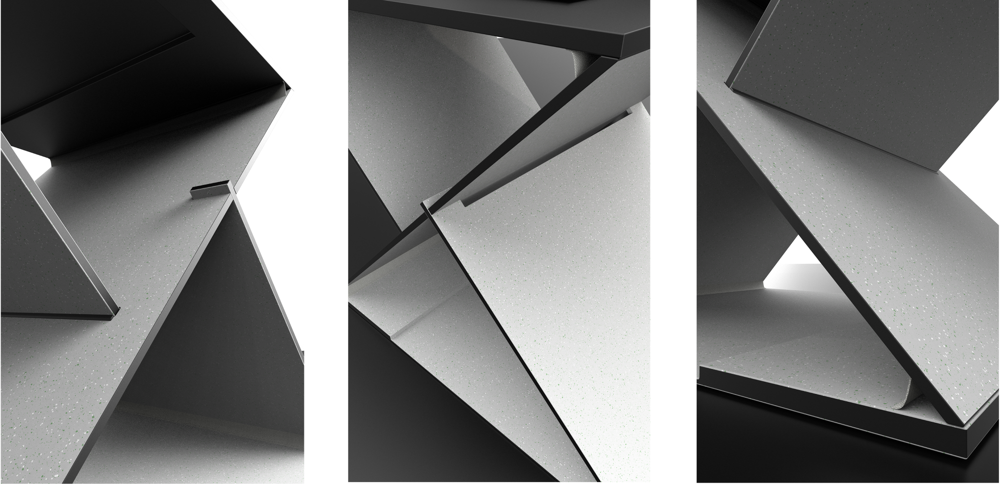
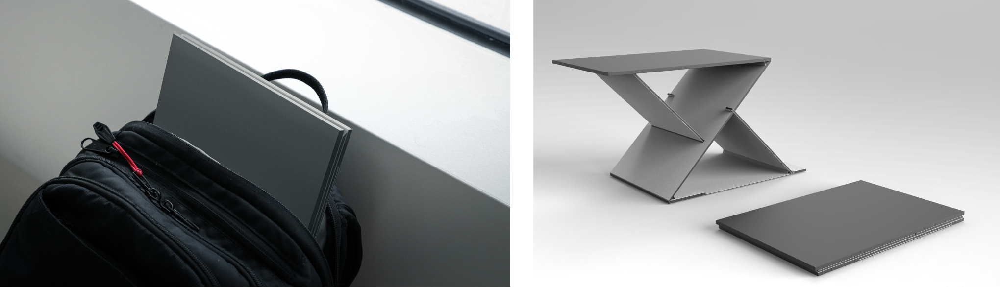
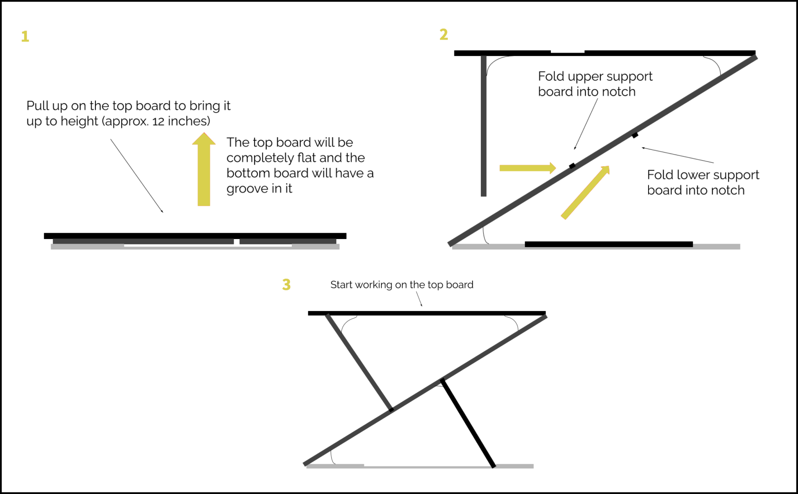

Summer 2020
Z Desk
Portable standing desk designed for improved laptop ergonomics on the go.
Product Design and Management
The Problem
As standing desks become more popular, we questioned the possibility of a portable solution. A friend uses a simple prop up desk for speech and debate. He needs it while traveling for competitions to make edits on the go but it’s shaky while typing. Travelers need an easy pop-up desk and that need is what led us to create a portable standing desk.
Challenge and Opportunity
How do we create a standing desk that is sturdy, inexpensive and is able to fit in a backpack?
Product Overview
Z Desk is a portable standing desk designed for improved laptop ergonomics on the go.
 Users and Usage
Our standing desk should be portable and light so it can be used anywhere. Ie. Presenting, during meetings, traveling, work on the go! Business people at various events may require a standing desk for professional reasons.
Instructions
Mini Case Study
While researching portable standing desks, we came across many flaws with products currently sold. For instance, portable standing desks might not even be portable often times being too large to travel or too heavy to carry. In addition, some solutions feel cheap and are not sturdy.
About this Project
The Summer going into my senior year of high school, I attended an industrial design camp at Georgia Tech (ofc virtually. thx COVID). In addition to learning about different industrial design practices, we were broken into teams of four and were tasked with creating a product to present. Below is the culmination of our work and a bit of our thinking.